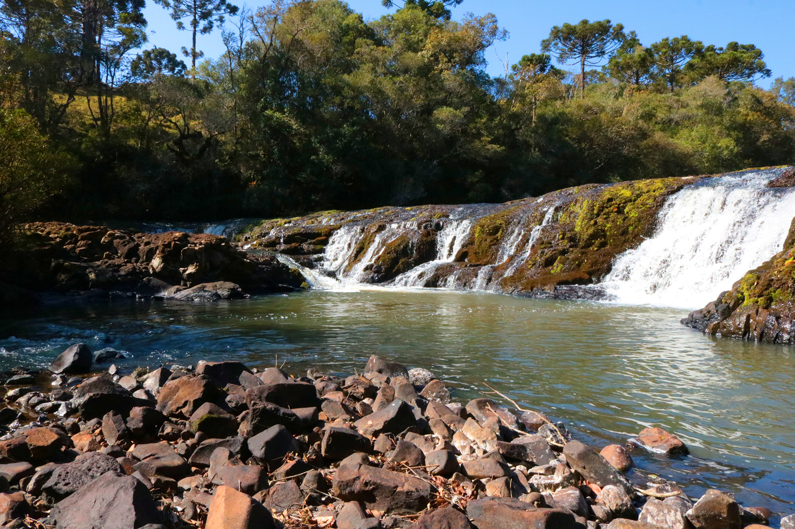

Imagens da cidade:



Turvo é uma cidade no Paraná, fundada em 12 de maio de 1982, com cerca de 14.000 habitantes. A economia é baseada na agricultura (soja, milho, feijão, trigo) e pecuária. Oferece boa qualidade de vida, com serviços de saúde e educação. Conhecida por suas belezas naturais, atrai visitantes para atividades ao ar livre. O nome vem do rio Turvo, com águas escuras pela matéria orgânica em suspensão.
Turvo está localizado no estado do Paraná, na região sul do Brasil. Fica a aproximadamente 250 km ao sudoeste de Curitiba, a capital do estado.